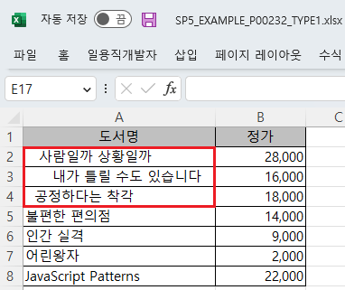
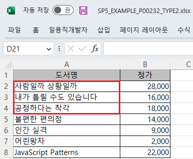
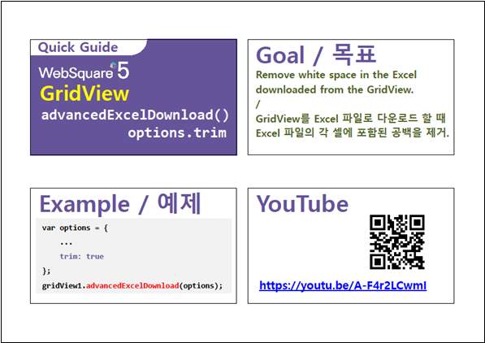

GridView의 엑셀 다운로드(함수 'advancedExcelDownload') 옵션 중 'trim' 설정의 예제입니다. 옵션 'trim'은 데이터의 좌우 공백 제거의 여부를 지정할 수 있습니다. false : (기본 값) 좌우 공백 제거하지 않음 true : 좌우 공백 제거
엑셀 다운로드 - 기본 동작
엑셀 다운로드 - 데이터 좌우 공백 제거
GridView의 컬럼 '도서명'의 데이터에 좌우 공백이 포함되어 있습니다.
[브라우저(Chrome) 실행 예시]
엑셀 파일 "SP5_EXAMPLE_P00232_TYPE1.xlsx"이 다운로드 됩니다.
다운로드 된 엑셀 파일 'SP5_EXAMPLE_P00232_TYPE1.xlsx'을 실행합니다.
컬럼 '도서명'의 데이터에 좌우 공백이 포함되어 있습니다.
[다운로드된 엑셀(2021) 파일 예시]

GridView의 컬럼 '도서명'의 데이터에 좌우 공백이 포함되어 있습니다.
[브라우저(Chrome) 실행 예시]
엑셀 파일 "SP5_EXAMPLE_P00232_TYPE2.xlsx"이 다운로드 됩니다.
다운로드 된 엑셀 파일 'SP5_EXAMPLE_P00232_TYPE2.xlsx'을 실행합니다.
컬럼 '도서명'의 데이터에 좌우 공백이 제거되어 있습니다.
[다운로드된 엑셀(2021) 파일 예시]

[소스 코드 예시]
//예제 파일의 스크립트 "scwin.btn_ex2_onclick"를 참고하세요. var jsnOptions; jsnOptions = { fileName: "SP5_EXAMPLE_P00232_TYPE2.xlsx", //엑셀의 파일명 trim : "true" //데이터 좌우 공백 제거 }; //options.trim <String:N> [default: false] gridView 데이터를 좌우 공백 적용 유무 (true 설정 시 공백 제거 후 적용) //GridView "grd_exam1"의 엑셀 다운로드 실행 grd_exam1.advancedExcelDownload(jsnOptions);
options.trim
[웹스퀘어5 SP5 개발 가이드] GridView
링크 : https://docs1.inswave.com/sp5_user_guide/bc10c1b82c9a2a0b#e1c4658baf7e726f
[웹스퀘어5 SP5 개발 가이드] GridView → Excel 다운로드
링크 : https://docs1.inswave.com/sp5_user_guide/bc10c1b82c9a2a0b#9fb910628c27d550
[웹스퀘어5 SP5 개발 가이드] Excel 파일에서 공백 제거
링크 : https://docs1.inswave.com/sp5_user_guide/bc10c1b82c9a2a0b#34781e289b3e0206
GridView Excel 파일에서 공백 제거
링크 : https://youtu.be/A-F4r2LCwmI
